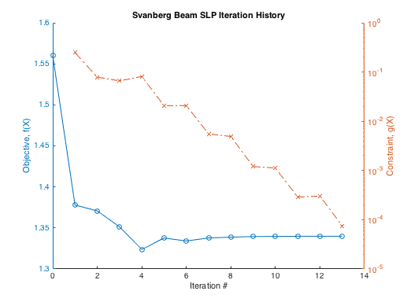

runSvanbergSLP.m script to run SLP for Svanberg's 5-segment beam.
Svanberg, Krister, "The Method of Moving Asymptotes--A New Method for Structural Optimization," Intl. J. Num. Meth. Vol. 24, 1987, pp. 359-373.
Contents
Initialize Variables & options
clear; clc; close all Nsegments=5; Xinitial=5; X0=repmat(Xinitial,Nsegments,1); vlb=zeros(Nsegments,1); options.Display='iter'; options.MaxIter=30; options.TolX=0.1; options.TolFun=0.001; options.TolCon=0.0001; %options.MoveLimit=1; % relative to X0; absolute, if options.TypicalX=1 %options.MoveReduction=0.8; %options.TrustRegion='off';
SLP
[x,f,exitflag,output]=slp_trust(@fSvanbergBeam,X0,options,vlb,[],@gSvanbergBeam); disp(' ') disp('Final Design Variables, X') disp(x)
Sequential Linear Programming Iteration History
Iteration Objective MaxConstraint Index Step-size Merit MoveLimit TrustRatio
0 1.56 0 1 0 1.56
1 1.3779 0.2486 1 1 1.56 0.2 0
2 1.3708 0.07887 1 0.5 1.429 0.1 0.6946
3 1.3513 0.0663 1 0.5 1.4 0.1 0.3718
4 1.3238 0.08129 1 0.5 1.4 0.1 0
5 1.3377 0.02069 1 0.25 1.357 0.05 0.6884
6 1.3341 0.02085 1 0.25 1.357 0.05 0
7 1.3378 0.005535 1 0.125 1.344 0.025 0.6832
8 1.3387 0.00491 1 0.125 1.344 0.025 -0.04444
9 1.3395 0.001203 1 0.0625 1.341 0.0125 0.7145
10 1.3397 0.001125 1 0.0625 1.341 0.0125 -0.06297
11 1.3399 0.0002886 1 0.03125 1.34 0.00625 0.6985
12 1.3399 0.0003026 1 0.03125 1.34 0.00625 -0.3026 Rejected
13 1.34 7.551e-05 1 0.01562 1.34 0.003125 0.6255 Bound
---------- ------------ ----------
Criteria 0.001 0.0001 0.1
SLP converged. Final objective function value = 1.34
Lagrangian gradient 2-norm = 0.0023432
Lagrangian gradient inf-norm = 0.001821
Final Design Variables, X
6.0009
5.3084
4.5030
3.5206
2.1406
Plot iteration history
iter=(0:output.iterations); [AX,H1,H2]=plotyy(iter,output.f,iter,abs(max(output.g,[],1)),'plot','semilogy'); set(get(AX(1),'Ylabel'),'String','Objective, f(X)'); set(get(AX(2),'Ylabel'),'String','Constraint, g(X)'); set(H1,'LineStyle','-','LineWidth',1,'Marker','o'); set(H2,'LineStyle','-.','LineWidth',1,'Marker','x'); xlabel('Iteration #'); title('Svanberg Beam SLP Iteration History');
SQP
[x,output]=sqp(@fSvanbergBeam,X0,options,vlb,[],@gSvanbergBeam) %#ok<*NOPTS>
Termination Criteria
0.0001 0.001 0.1
-----------------------------------
f-CNT FUNC STEP NAC max{g} j KTO max(S)
1 1.56 0 6 0 1 0.00841 0.061
2 1.5516 1 6 0.000166 1 0.041 0.304
3 1.5106 1 6 0.00414 1 0.165 1.31
4 1.3483 1 6 0.1 1 0.13 0.207
5 1.3934 1 6 0.00827 1 0.0331 0.457
6 1.364 1 6 0.0116 1 0.0507 0.99
7 1.3186 1 6 0.0873 1 0.0538 0.355
8 1.3377 1 6 0.025 1 0.0194 0.0605
9 1.3463 1 6 0.000845 1 0.00222 0.096
10 1.3444 1 6 0.000941 1 0.00496 0.169
11 1.3398 1 6 0.00507 1 0.0024 0.0999
12 1.3401 1 6 0.00126 1 0.000801 0.0874
13 1.3398 1 6 0.000882 1 0.000753 0.00428
14 1.3402 1 6 3.48e-06 1 0.000148 0.0203
Optimization Terminated Successfully from sqp
x =
6.0719
5.2585
4.4547
3.5437
2.1485
output =
fval: 1.3402
funcCount: 14
gradCount: 14
iterations: 13
options: [1x18 double]
Linear Objective function, Nonlinear constraints, 5-DV
type fSvanbergBeam
function [f,g] = fSvanbergBeam( x ) % Function evaluation of Svanberg's 5-segment beam % %--Input % % x....... Design variable vector = beam cros-sectional dimensions % %--Output % f....... Objective function value f(x)=weight % g....... Constraint function value g(x)=tip deflection constraint<=0 C1 = 0.0624; C2 = 1; f = C1*sum(x); g = sum( [61 37 19 7 1]'./x(:).^3) - C2;